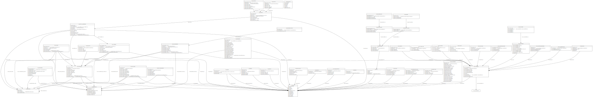

Children's Services|Social Care
Standard Safeguarding Dataset (SSD)
This is the source repository for the Standard CSC Dataset for Local Authorities (Project 1a DDSF). A standardised dataset for Children's Social Care (CSC) in safeguarding authorities. Enabling increased scope for bespoke local analysis using sector-driven national level data (Ref: Project Stage 1); combined with a suite of methods/tools that all local authorities can adopt at near-zero running cost to independently produce the standardised dataset (Ref: Project Stage 2). Current variation in local data caputure and storage limits data collaboration between LAs to standard ‘core’ datasets – most notably the Children in Need (CIN) Census and SSDA903, for children in need and looked after children respectively – and Ofsted’s “Annex A” specification of child-level data. These datasets often lack the depth and granularity that some individual LAs incorporate in bespoke local analysis, including to understand quality of practice and improved outcomes for vunerable children. Current phase : deployment.
Initial core of the SSD
The dataset in-part aims to standardise existing local variation in how collected data is stored, thus enabling a significantly expanded collaborative set of data items and providing wider multi-regional/national level consistency, improved independent LA benchmarking and potential for identifying best practice outcomes journeys. A six-year historical data scope is proposed across the range of safeguarding activities performed by councils. Project oversight and governance via a dedicated steering group, DfE project team and volunteer LA's as part of an initial pilot and extended development group.
SSD Proposed Schema

Running the SSD for/within your LA (Summarised getting started introduction)
Any representative from your LA is welcome to get in touch directly with questions or requests for support to get started with, or run the SSD (see following subscribe/contact/volunteer details). Obviously we welcome questions/input regardless of your involvement decision etc!
The SSD is essentially batched SQL script(s), that create labelled persistent data tables alongside your existing reporting tables(e.g. located where performance/Analyst teams might already pre-process or query reporting data). No data is shared or leaves your LA, and no changes to your existing systems are required.
Data tables(with data copied from your existing raw CMS tables) and indexes for the SSD are created, and therefore in some cases will need support and/or agreement from either your IT or Intelligence team. The SQL script is always non-destructive, i.e. it does nothing to your existing data/tables/anything - the SSD process is simply a series of SELECT statements, pulling copied data into a new standardised field and table structure on your own system for access by only you/your LA.
Getting started workflow:
The development and deployment of the SSD is functional only within, and as a result of direct involvement with Local Authorities. So we're not expectant of a one-size-fits-all approach, and will work with your team(s) to ensure confidence in, and successfull implementation of the SSD for your LA.
- Contact us with your interest --> Conversations to assist running(within LA) & any basic set up needed --> Access given to the SSD script by email or via Github --> LA runs SSD --> Support available if needed --> shared access given to any available further tools e.g. stat-returns scripts etc. --> Feedback and improvements change requests as needed.
Subscribe or volunteer for pilot involvement. - Please be aware that in order to make this information page available outside the (currently private)code repositiory, this page has been re-generated from the (currently private)README.md page and as a result some inconsistent/unstructured text formating might be evident. Links to folders within the (currently)private respository will of course also not work until your LA is granted access.
Specification components
Specification
The SSD specification has been developed through extensive sector research, consideration of existing DfE returns, concurrent DfE projects, 130hrs+ of direct user research with Local Authorities and stakeholders. Project specification development has been made transparent at the monthly DfE Show & Tells (as part of the DDSF S&T's March'23-Feb'24) concurrent with the aforementioned oversight and governance.
The project will use GIT to track and approve proposed changes to the safeguarding data standard. There is further ongoing work to provide further 'human readable' reporting methods beyond the aforementioned data object conceptual model. We have published our full data-landscape overview that resulted in the specification and have DfE agreement to publish the final SSD report/DDSF findings here
SSD in conjuction with (project|sector)developments
As part of the projects research and initial scoping, the team have considered input and results from all of the following sector developments towards ensuring that the SSD take current and changing LA/DfE needs into account.
- CSC National Framework
- SEN2
- ADCS Safeguarding
- School Census
- EH Benchmarking
- EET Activity
- Linking data items to strategic goals
- Additional ongoing user research input
- Kinship Care (DDSF 1b(i))
- Pre-Proceedings (DDSF 1b(ii))
- Section 251 Finance (DDSF 1b(iii))
- Voice of Child & Family (DDSF 1b(iv))
- Social worker CMS input data (DDSF 2a)
Local Authorities guiding development
Hertfordshire CC : Bid Lead | Knowsley CC : Steering Group | Data2Insight : Project Lead | East Sussex CC : Host Authority | Essex CC : Project Management and Mosaic Pilot Development | ADCS North West (hosted by Stockport Council) | Blackpool CC : Mosaic Pilot Development | East Riding CC : Azeus Pilot Development
Repo forks, and direct involvement with the project are welcomed and you can find more information about Data2Insight on our website https://www.datatoinsight.org/
SSD development details
Technical and low-level SSD detail
The additional explanation detail that follows is relevant to those seeking a more in depth understanding of the granular SSD development detail. The majority of what follows on this page can be ignored/is less relevant to those looking only to set up their LA for SSD use.
Data objects Conceptual Model
Defining the scope of objects/data points capturing LA Childrens Services data during the different stages of an individual's progress through the CSC system(s). Published for iterative review.
Change log
Agreed data item-level changes are assigned an identifier, and will be traceable within the changelog.md. A sub-set of the change details for the most recent change (if any) also appear within each objects metadata block within the YAML file(s). The current change log contains sample data until we deploy the first pilot release. Note: Object-level change tracking is not yet available/in progress; feedback/suggestions welcomed.
- name: <data object name>
fields:
- [...]
metadata:
release_datetime:
change_id:
item_changes_count:
change_reason:
change_type: <bug|new feature|change|...tbc>
Data objects
The data model is described using [YAML][yaml], which is designed to be a "human friendly" data format, offering a more readable structure than such as XML/JSON, a reduced storage/processing footprint and in combination with Git provides an audit trail of changes that can be tracked.
The objects folder contains definition for the specification, data objects as well as details of synthetic data parameters and validation rules that apply to each field within the object. At the moment, the validation definitions do not reference back to the stat-returns validation process.
An example data object contains a description and a set of fields for that record. The fields have an ID (the key), a name, type, description, which cms systems the data item/field is available on and any comments,
- name: <data object name>
fields:
- name: <item Name>
type: <string|int|categorical|list>
description:
item_ref: <data item ref code>
primary_key: <true>
validators:
<validator>:
categories:
returns:
cms:
cms_field:
- liquid_logic:<ll_field_name>
- mosaic: <mosaic_field_name>
cms_table:
- liquid_logic:<ll_tbl_name>
- mosaic: <mosaic_tbl_name>
guidance: <DfE of similar guidance txt>
metadata:
release_datetime:
change_id:
item_changes_count:
change_reason:
change_type: <bug|new feature|change|...tbc>
[...]
Output
Since the specification is intended to be easy to maintain, and most case management and data management systems aren't YAML aware, the project is working towards providing an open source set of tools to perform the needed processing, incl. extract the required data items from current/known CMS systems and provide methods to allow the YAML object definitions to be easily updated from specification improvement updates or required revisions. Stakeholders and others are also invited to fork the repository and/or suggest changes to all elements of the project including definitions structure and code-base.
Currently the YAML data objects, associated diagrams, documentation and website can be (re-)generated using the tools. The SQL[sql] tools are in development at the moment, but are aimed towards extracting the relevant data directly from different CMS systems in a CMS-agnostic approach; enabling the inclusion of both new data objects, new items in existing objects and revisions to both. SQL for each CMS type can be generated using the provided tools(Pilot includes only Liquid Logic and MOSAIC compatibility), and the resultant SQL scripts are output into an SQL folder.
Current phase
The project is following a transparent and iterative development cycle, within the following deployment stages. Further stakeholder feedback and involvement is welcomed at any phase. LA's that wish to take part in the pilot deployment are further invited to get in touch.
| Stage | Phase | Description |
|---|---|---|
| 1 | User research | Approach outline and user research with LA's to look at how data works in relevant services, consider data gaps, challenges, and opportunities. |
| 1 | Prototype | Detailed survey of current data item usage, link data items to strategic goals, prototype specification(peer feedback), initial workflow toolset |
| 2 | Deploy(pilot) [Current Phase] | Deploy with support to pilot councils by developing reproducible implementations. |
| 2 | Feedback | Product delivered to the DfE and offer supported adoption for LA's and iterative further development. |
| 2 | Continuous Deployment | Maintenance roadmap and framework agreement towards iterative improvement-driven approach. |
Repo workflow
In progress...
Repo running notes
The Python based toolset will run within a Git Codespace. Run the setup file, as below on the command-line.
Set up the working environment (may prompt Y/N part-way through, type 'y'to continue):
./setup.sh
For ref: The above bash script contains and runs
[$] pip install -r requirements.txt
[$] sudo apt-get update
[$] sudo apt-get install graphviz libgraphviz-dev pkg-config
[$] pip install pygraphviz
[$] pip install poetry
Supplied additional python tools(.py) are in a tools folder. To run them, right click on the file and select 'run in terminal' or type filename on the commandline. This will only work if the setup.sh file has been already run to install the needed dependencies.
Other relevant links
[yaml] : https://yaml.org/
[sql] : https://en.wikipedia.org/wiki/SQL/